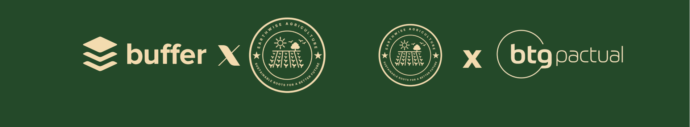

Uma das formas mais valiosas de apoio que recebemos das empresas é o envio de suprimentos de pesquisa e análise. Isso inclui desde softwares especializados, equipamentos de tecnologia e materiais de escritório até dados e informações essenciais para a realização de nossos projetos. Esses recursos são fundamentais para que possamos realizar estudos detalhados, fazer avaliações de impacto e otimizar as estratégias que adotamos em nossas iniciativas. O acesso a essas ferramentas também nos permite realizar uma pesquisa mais aprofundada e produzir relatórios com dados consistentes, os quais são fundamentais para atrair mais parceiros e também para o acompanhamento do impacto social das nossas ações. Além disso, as empresas frequentemente nos ajudam com o orçamento dos projetos, seja por meio de doações diretas, investimentos em materiais ou serviços, ou pela disponibilização de seus próprios funcionários especializados em áreas como contabilidade, logística e gestão de recursos. Esse suporte financeiro e logístico é crucial para a execução dos projetos de forma eficiente e com resultados de alta qualidade, garantindo que possamos atender de forma eficaz as necessidades da nossa comunidade e alcançar os objetivos estabelecidos. A visibilidade da nossa marca também é amplificada pelas parcerias com empresas. Quando elas se associam à nossa ONG, muitas vezes oferecem espaços para que nossa organização seja promovida em eventos corporativos, campanhas publicitárias ou em suas próprias redes de comunicação. Isso ajuda a aumentar a conscientização sobre as causas que defendemos e atrai novos apoiadores, doadores e voluntários. Além disso, a associação com marcas renomadas fortalece nossa credibilidade e visibilidade no mercado, permitindo que possamos estabelecer uma rede mais ampla de apoio e expandir nosso alcance.
As empresas nos apoiam porque reconhecem a importância de investir em causas sociais e de demonstrar seu compromisso com o bem-estar da comunidade e do meio ambiente. Ao apoiar nossa ONG, elas não só contribuem para a transformação social, mas também fortalecem sua imagem institucional, demonstrando responsabilidade social e engajamento com a sustentabilidade. Além disso, essas parcerias oferecem uma oportunidade de visibilidade positiva, permitindo que as empresas se conectem com novos públicos, aumentem a lealdade de seus clientes e atraiam talentos que compartilham de valores semelhantes. Assim, ao apoiar nossa organização, elas não apenas ajudam a promover um impacto positivo, mas também consolidam seu papel como agentes de mudança na sociedade.
Sua empresa pode fazer uma grande diferença ao apoiar nossa ONG. Por meio do botão abaixo, você encontrará diversas formas de contribuição, como doações financeiras, fornecimento de suprimentos, serviços especializados ou apoio a eventos e campanhas de arrecadação. Esse apoio é fundamental para o sucesso de nossos projetos, permitindo que possamos ampliar nosso impacto e beneficiar mais pessoas. Além disso, ao se associar a nossa causa, sua empresa reforça seu compromisso com a responsabilidade social, mostrando engajamento com o bem-estar da comunidade e com causas que promovem mudanças positivas. Você, como pessoa física, também pode contribuir de maneira simples e direta. Basta acessar a aba "Doar" e escolher o valor que deseja doar, seja de forma pontual ou recorrente. Cada contribuição, independentemente do valor, tem um grande impacto em nossos projetos e ajuda a transformar a vida de muitas pessoas. O seu apoio é fundamental para que possamos continuar a promover mudanças significativas e alcançar mais pessoas em situação de vulnerabilidade.